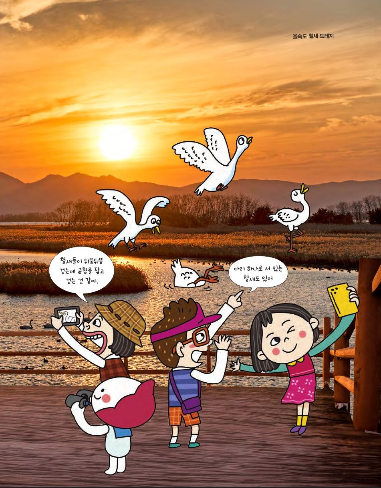

을숙도의 철새가 뒤뚱거리며 걷는 건 무게중심을 앞으로 옮겨 추진력을 얻기 위해서예요. 균형을 이루는 점, 무게중심을 찾아보세요.
★ 이 단원에서는 — 삼각형의 꼭짓점에 대한 무게중심을 찾고 실생활 문제를 해결할 수 있다.

📍 을숙도 철새 도래지삼각형의 높이를 n등분하여 직사각형을 그리면, 각 직사각형의 무게중심(두 대각선의 교점)은 어디에 놓일까요? 등분 수를 늘려 보세요. 꼭짓점은 드래그할 수 있어요.
직사각형의 무게중심들은 모두 한 직선(중선) 위에 있어요. 그래서 자 위에 중선이 오도록 올리면 평형이 유지되고, 세 중선의 교점이 면의 무게중심이에요.
받침점에서 a, b만큼 떨어진 곳에 M, N의 힘이 작용할 때 M×a = N×b이면 평형. 몸무게 비가 1:2인 딸과 아빠가 평형이 되게 앉혀 보세요. (A·B·받침점·C·D 간격은 모두 같아요)
딸은 받침점에서 아빠보다 2배 멀리 앉아야 해요(딸 D ↔ 아빠 B, 또는 딸 A ↔ 아빠 C). 모빌에서 A의 1개와 B의 3개는 B에 3배 가까운 곳, 즉 A·B를 3:1로 나누는 점에 실을 매달면 돼요.
세 꼭짓점에 무게 1인 추가 하나씩. 지렛대 원리로 무게중심을 찾아요. 단계 버튼을 눌러 보세요. 꼭짓점은 드래그할 수 있어요.
M은 AB의 중점, G는 MC를 2:1로 나누는 점(무게 2 : 1이므로 거리는 1 : 2). 이는 중선 CM 위에서 꼭짓점으로부터 2/3 지점 — 세 중선의 교점과 똑같은 점이에요.
세 꼭짓점에 쌓기나무 3개, 4개, 6개를 올렸어요. 무게가 다르면 무게중심은 어디로 갈까요? 무게를 바꾸고 꼭짓점을 드래그해 보세요.
그다음 '7개 묶음 놓아 보기'를 켜면 받침점 ✚이 G에서 조금 옮겨져요. 쌓기나무 7개 묶음(빨강)을 어디에 두어야 새 받침점 ✚에서 균형이 잡힐까요? (✚도 드래그할 수 있어요)
A·B의 무게중심은 AB를 4:3으로 나누는 점(무게 3과 4 → 거리는 반대로 4:3). 거기 실린 무게 7과 C의 6의 무게중심은 그 선분을 6:7로 나누는 점이 세 묶음의 무게중심 G예요. 받침점을 G에 두면 균형!
받침점 ✚을 G에서 옮겼다면, 이제 '무게 13인 G'와 '무게 7인 묶음'의 지렛대로 생각해요. 묶음은 G에서 ✚ 쪽으로 이은 직선 위, ✚ 너머에 두고, 거리는 무게의 반대 비율 G✚ : ✚묶음 = 7 : 13이 되게 놓으면 균형이 잡혀요.